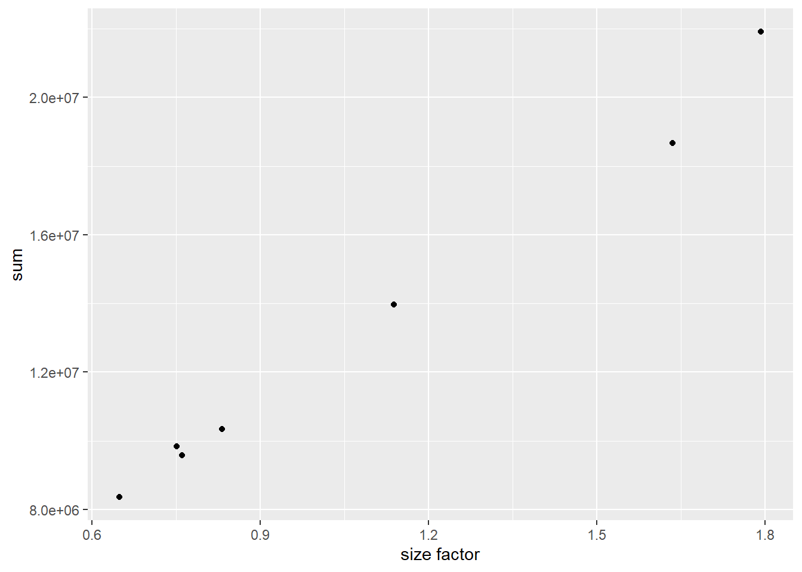

library(pasilla)
fn = system.file("extdata", "pasilla_gene_counts.tsv",
package = "pasilla", mustWork = TRUE)
counts = as.matrix(read.csv(fn, sep = "\t", row.names = "gene_id"))16 Count Data
Many measurement devices in biotechnology are based on massively parallel sampling and counting of molecules. Its applications fall broadly into two main classes of data output: in the first case, the output of interest are the sequences themselves, perhaps also their polymorphisms or differences to other sequences seen before. In the second case, the sequences themselves are more or less well-understood (say, we have a well-assembled and annotated genome), and our interest is on how abundant different sequence regions are in our sample.
Ideally we might want to sequence and count all molecules of interest in the sample. Generally this is not possible: the biochemical protocols are not 100% efficient, and some molecules or intermediates get lost along the way. Moreover it’s often also not even necessary. Instead, we sequence and count a statistical sample. The sample size will depend on the complexity of the sequence pool assayed; it can go from tens of thousands to billions.
16.1 Terminology
Let’s define some terminology related to count data.
A sequencing library is the collection of DNA molecules used as input for the sequencing machine. Note that library size can either mean the total number of reads that were sequenced in the run or the total number of mapped reads.
Fragments are the molecules being sequenced. Since the currently most widely used technology1 can only deal with molecules of length around 300–1000 nucleotides, these are obtained by fragmenting the (generally longer) DNA or cDNA molecules of interest.
A read is the sequence obtained from a fragment. With the current technology, the read covers not the whole fragment, but only one or both ends of it, and the read length on either side is up to around 150 nucleotides.
We can load in an example of some count data from the data package pasilla.
How would we check the dimension of counts and preview its contents?
16.2 Challenges with count data
What are the challenges that we need to overcome with such count data?
The data have a large dynamic range, starting from zero up to millions. The variance, and more generally, the distribution shape of the data in different parts of the dynamic range are very different. We need to take this phenomenon, called heteroskedasticity, into account.
The data are non-negative integers, and their distribution is not symmetric – thus normal or log-normal distribution models may be a poor fit.
We need to understand the systematic sampling biases and adjust for them. This is often called normalization, but has a different meaning from other types of normalization. Examples are the total sequencing depth of an experiment (even if the true abundance of a gene in two libraries is the same, we expect different numbers of reads for it depending on the total number of reads sequenced), or differing sampling probabilities (even if the true abundance of two genes within a biological sample is the same, we expect different numbers of reads for them if their biophysical properties differ, such as length, GC content, secondary structure, binding partners).
16.3 Modeling count data
Consider a sequencing library that contains \(n_1\) fragments corresponding to gene 1, \(n_2\) fragments for gene 2, and so on, with a total library size of \(n = n_1 + n_2 + ...\). We submit the library to sequencing and determine the identity of \(r\) randomly sampled fragments.
We can consider the probability that a given read maps to the \(i^{th}\) gene is \(p_i = n_i \ n\), and that this is pretty much independent of the outcomes for all the other reads. So we can model the number of reads for gene by a Poisson distribution, where the rate of the Poisson process is the product of \(p_i\), the initial proportion of fragments for the \(i^{th}\) gene, times \(r\), that is: \(\lambda_i = rp_i\).
In practice, we are usually not interested in modeling the read counts within a single library, but in comparing the counts between libraries. That is, we want to know whether any differences that we see between different biological conditions – say, the same cell line with and without drug treatment – are larger than expected “by chance”, i.e., larger than what we may expect even between biological replicates. Empirically, it turns out that replicate experiments vary more than what the Poisson distribution predicts.
Intuitively, what happens is that \(p_i\) and therefore \(\lambda_i\) also vary even between biological replicates; perhaps the temperature at which the cells grew was slightly different, or the amount of drug added varied by a few percent, or the incubation time was slightly longer. To account for that, we need to add another layer of modeling on top. It turns out that the gamma-Poisson (a.k.a. negative binomial) distribution suits our modeling needs. Instead of a single \(\lambda\) which represents both mean and variance, this distribution has two parameters. In principle, these can be different for each gene.
16.4 Normalization
Often, there are systematic biases that have affected the data generation and are worth taking into account. The term normalization is commonly used for that aspect of the analysis, even though it is misleading: it has nothing to do with the normal distribution; nor does it involve a data transformation. Rather, what we aim to do is identify the nature and magnitude of systematic biases, and take them into account in our model-based analysis of the data.
The most important systematic bias stems from variations in the total number of reads in each sample. If we have more reads for one library than in another, then we might assume that, everything else being equal, the counts are proportional to each other. This is true to a point. However, DESeq2 uses a slightly more advanced method of normalizing total number of reads by ignoring genes that appear to be truly up- or down- regulated in some samples, thus only considering ‘control’ genes to calculate a factor for total read size in each sample. We can compare the simple total read count versus DESeq2’s size estimation in the Pasilla data:
library("tibble")Warning: package 'tibble' was built under R version 4.2.2library("ggplot2")Warning: package 'ggplot2' was built under R version 4.2.2library("DESeq2")
ggplot(tibble(
`size factor` = estimateSizeFactorsForMatrix(counts),
`sum` = colSums(counts)), aes(x = `size factor`, y = `sum`)) +
geom_point()
Normalization is often used to account for known biases, such as batch effects accross different samples in many types of analyses. The most classic example of normalization, and thus its name, would be to transform a dataset such that its mean is 0 and its variance is 1, thus matching a normal distribution.
16.5 Log transformations
For testing for differential expression we operate on raw counts and use discrete distributions. For other downstream analyses – e.g., for visualization or clustering – it might however be useful to work with transformed versions of the count data.
Maybe the most obvious choice of transformation is the logarithm. However, since count values for a gene can become zero, some advocate the use of pseudocounts, i.e., transformations of the form
\[ y = log_2(n+n_0) \] where \(n\) represents the count values and \(n_0\) is a somehow chosen positive constant (often just 1).
16.6 Classes in R
Let’s return to the pasilla data. These data are from an experiment on Drosophila melanogaster cell cultures that investigated the effect of RNAi knock-down of the splicing factor pasilla on the cells’ transcriptome. There were two experimental conditions, termed untreated and treated in the header of the count table that we loaded. They correspond to negative control and to siRNA against pasilla. The experimental metadata of the 7 samples in this dataset are provided in a spreadsheet-like table, which we load.
annotationFile = system.file("extdata",
"pasilla_sample_annotation.csv",
package = "pasilla", mustWork = TRUE)
pasillaSampleAnno = readr::read_csv(annotationFile)Rows: 7 Columns: 6
── Column specification ────────────────────────────────────────────────────────
Delimiter: ","
chr (4): file, condition, type, total number of reads
dbl (2): number of lanes, exon counts
ℹ Use `spec()` to retrieve the full column specification for this data.
ℹ Specify the column types or set `show_col_types = FALSE` to quiet this message.pasillaSampleAnno# A tibble: 7 × 6
file condition type `number of lanes` total number of…¹ exon …²
<chr> <chr> <chr> <dbl> <chr> <dbl>
1 treated1fb treated single-read 5 35158667 1.57e7
2 treated2fb treated paired-end 2 12242535 (x2) 1.56e7
3 treated3fb treated paired-end 2 12443664 (x2) 1.27e7
4 untreated1fb untreated single-read 2 17812866 1.49e7
5 untreated2fb untreated single-read 6 34284521 2.08e7
6 untreated3fb untreated paired-end 2 10542625 (x2) 1.03e7
7 untreated4fb untreated paired-end 2 12214974 (x2) 1.17e7
# … with abbreviated variable names ¹`total number of reads`, ²`exon counts`As we see here, the overall dataset was produced in two batches, the first one consisting of three sequencing libraries that were subjected to single read sequencing, the second batch consisting of four libraries for which paired end sequencing was used. As so often, we need to do some data wrangling: we replace the hyphens in the type column by underscores, as arithmetic operators in factor levels are discouraged, and convert the type and condition columns into factors, explicitly specifying our prefered order of the levels.
library("dplyr")Warning: package 'dplyr' was built under R version 4.2.2
Attaching package: 'dplyr'The following object is masked from 'package:AnnotationDbi':
selectThe following objects are masked from 'package:GenomicRanges':
intersect, setdiff, unionThe following object is masked from 'package:GenomeInfoDb':
intersectThe following objects are masked from 'package:IRanges':
collapse, desc, intersect, setdiff, slice, unionThe following objects are masked from 'package:S4Vectors':
first, intersect, rename, setdiff, setequal, unionThe following object is masked from 'package:matrixStats':
countThe following object is masked from 'package:Biobase':
combineThe following objects are masked from 'package:BiocGenerics':
combine, intersect, setdiff, unionThe following objects are masked from 'package:stats':
filter, lagThe following objects are masked from 'package:base':
intersect, setdiff, setequal, unionpasillaSampleAnno = mutate(pasillaSampleAnno,
condition = factor(condition, levels = c("untreated", "treated")),
type = factor(sub("-.*", "", type), levels = c("single", "paired")))
with(pasillaSampleAnno,
table(condition, type)) type
condition single paired
untreated 2 2
treated 1 2DESeq2 uses a specialized data container, called DESeqDataSet to store the datasets it works with. Such use of specialized containers – or, in R terminology, classes – is a common principle of the Bioconductor project, as it helps users to keep together related data. While this way of doing things requires users to invest a little more time upfront to understand the classes, compared to just using basic R data types like matrix and dataframe, it helps avoiding bugs due to loss of synchronization between related parts of the data. It also enables the abstraction and encapsulation of common operations that could be quite wordy if always expressed in basic terms. DESeqDataSet is an extension of the class SummarizedExperiment in Bioconductor. The SummarizedExperiment class is also used by many other packages, so learning to work with it will enable you to use quite a range of tools.
We use the constructor function DESeqDataSetFromMatrix to create a DESeqDataSet from the count data matrix counts and the sample annotation dataframe pasillaSampleAnno.
mt = match(colnames(counts), sub("fb$", "", pasillaSampleAnno$file))
stopifnot(!any(is.na(mt)))
pasilla = DESeqDataSetFromMatrix(
countData = counts,
colData = pasillaSampleAnno[mt, ],
design = ~ condition)
class(pasilla)[1] "DESeqDataSet"
attr(,"package")
[1] "DESeq2"The SummarizedExperiment class – and therefore DESeqDataSet – also contains facilities for storing annotation of the rows of the count matrix. For now, we are content with the gene identifiers from the row names of the counts table.
The materials in this lesson have been adapted from: - Statistical Thinking for the 21st Century by Russell A. Poldrack. This work is distributed under the terms of the Attribution-NonCommercial 4.0 International (CC BY-NC 4.0), which permits unrestricted use, distribution, and reproduction in any medium, provided the original author and source are credited and the material is used for noncommercial purposes. - Modern Statistics for Modern Biology by Susan Holmes and Wolfgang Huber. This work is distributed under the terms of the Attribution-NonCommercial-ShareAlike 2.0 Generic (CC BY-NC-SA 2.0), which permits unrestricted use, distribution, and reproduction in any medium, provided the original author and source are credited, the material is used for noncommercial purposes, and the same license is used for any derivative material.